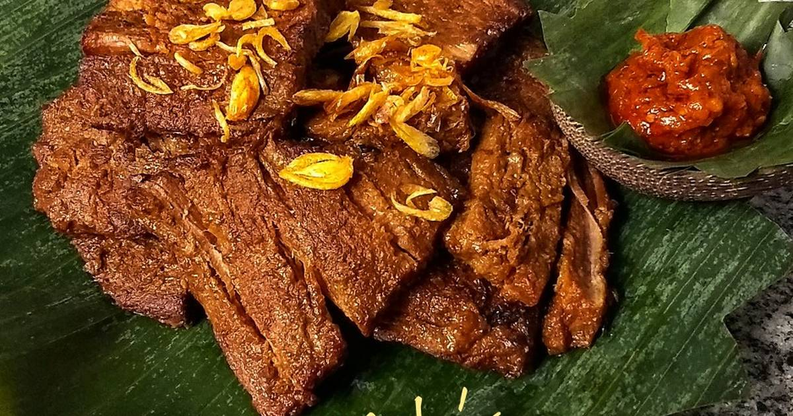

Gepuk

Deskripsi
Gepuk adalah makanan yang berasal dari Garut, Jawa Barat, Indonesia.
Bahan-bahan
- 1 kg Daging sapi tanpa lemak
- 2-3 Daun Salam
- 5 Bawang merah
- 3 Bawang putih
- 1 sdt ketumbar
- 1 ruas kecil lengkuas
- 1 sdt asam jawa
- 50-100 gram gula merah (sesuai selera untuk rasa manisnya)
- Secukupnya garam dan merica
- 300 cc/ml santan
Langkah-langkah
-
Rebus daging dengan daun salam sampai matang saja (jangan terlalu matang), ambil dagingnya saja, sisihkan kaldunya.
-
Potong-potong daging sesuai selera dengan ketebalan 1-2 Cm. Saya potongannya selebar telapak tangan dalam.
-
Pukul-pukul tiap irisan daging tapi jangan sampai hancur, susun dalam wadah/ panci untuk memasak, sisihkan siapkan bahan lainnya.
-
Haluskan bawang merah, bawang putih, ketumbar, lengkuas, garam dan merica.
-
Tambahkan bumbu dengan sedikit kaldu rebusan tadi dan santan pada wadah daging yang sudah disusun tadi sampai menutupi permukaan daging.
-
Tambahkan asam jawa dan gula jawa/gula merah.
-
Masak sampai daging benar-benar matang dan empuk. Sampai air hampir habis dan bumbu meresap. Hati-hati jangan sampai gosong bawahnya, sesekali harus diaduk.
-
Daging gepuk siap digoreng sesaat sebelum disajikan. Waktu menggorengnya sebentar saja ya.
-
Taburi bawang goreng di empal gepuk saat disajikan
-
Sajikan dengan sambal terasinya/sambal bawang/sambal tomat.